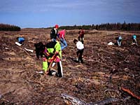
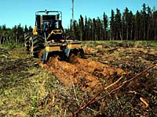

Development
Research
Habitat Project
Model Forest
Woodlot Owners
Aboriginal Lands
The federal government plays an important part
in the development of Canada's forests. Through work with the
provincial government, Aboriginals, private woodlot owners and
the general public, the Canadian Forest Service has been able
to promote forest science, integrated resource management, environmental
quality, forest sector development and international trade. In
this way, it follows its mission, which states: "To promote the sustainable development and competitiveness of Canada's forest sector for the well-being of present and future generations of Canadians." |
 As users put increasing pressure on Canada's forests, resource managers need to be flexible when planning for the future of our forests. Not only is a sustainable supply of timber important, but the sustainable development of other forest resources is also a concern. Resources such as wildlife, watersheds, recreation and fisheries complete the forest ecosystem and work together as an ecological entity within our forests. |
In Saskatchewan, research is being conducted in many fields of forestry. Industry surveys by the Canadian Forest Service: (1) identify products and markets, show "who's who" in the industry, (2) characterize the forest sector in terms of the number of firms and workers, and (3) generate public awareness of Saskatchewan's forest industry. |
Other federal research areas focus on the development of new silvicultural techniques and equipment, integrated resource management programs, and environmental impacts of forestry practices, as well as wildlife concerns, watershed values, climate change studies, and other non-timber values. |
Saskatchewan
Forest Habitat Project
This project is a good example of how to manage the forest as an integrated resource, instead of simply as a sustainable source of timber. The aim of the project is to manage the timber resource and, at the same time, create and improve wildlife habitat. By considering the needs of wildlife, forest managers can carry out forestry activities and harvest the timber they require, while preserving and sustaining wildlife habitat. |

Model forests are intended to ensure environmental, social and economic interests. The Prince Albert Model Forest, located one half-hour drive north of Prince Albert, Saskatchewan, is one of ten areas chosen from across Canada to promote innovative forest management The diverse and thriving forest community of 367 000 hectares is managed by a partnership committed to sustainable development. The partnership is drawn from industry, government resource management agencies and the First Nations. |

The model forest
|

Emphasis is now on integrating forestry practices with non-consumptive forest uses such as recreation, watershed protection and enhanced wilderness values. The model forest program is funded by the Canadian Forest Service under Canada's Green Plan. |
Private land accounts for about 400 000 hectares of the province's forested area and is located primarily at the agricultural fringe. This land is productive in the traditional sense because it provides a timber source; however, it also provides non-timber forest products such as Christmas trees, maple syrup and mushrooms. |
The Farm Woodlot Association of Saskatchewan, in conjunction with the Canadian Forest Service is providing technical knowledge and incentives to help landowners who are interested in managing the forest on their land. A federal government-sponsored agroforestry extension specialist assists in preparing and implementing management plans and providing services for woodlot owners. |
Saskatchewan has 152 Aboriginal reserves, which cover over 133 000 km2 hectares of timber-productive non-reserved forest lands. These forest lands provide Native groups with traditional hunting, trapping and recreational opportunities, as well as wood for firewood and shelter purposes. Forest lands also provide a timber source for the forest sector, which supports employment and stability in Aboriginal communities and therefore should be managed efficiently. |
 The Canadian Forest Service and the Native groups are completing integrated resource management plans, using new inventory technology. Inventory data is collected and entered into a geographic information system that analyzes data and helps implement the management plan. The plans call for modern technology and silvicultural techniques. The Native groups are also working on other forest management techniques, such as site preparation, reforestation projects and releasing operations. |